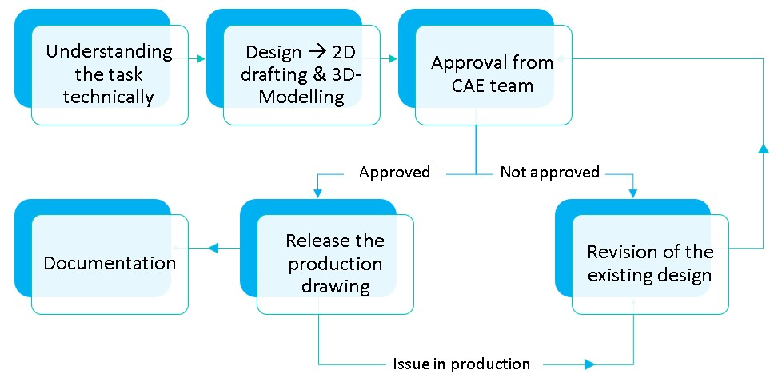

Senior Design Engineer
L&T Defense, Visakhapatnam
Tasks
Tools
CATIA v5
AutoCAD
Enovia PLM (Product Lifecycle Management)
MS PowerPoint
MS Excel
About the company
An internationally recognized Indian multinational corporation, Larsen & Toubro (L&T) focuses on high-tech manufacturing, services, and EPC (Engineering, Procurement, and Construction) projects. With operations in more than 50 nations and a strong emphasis on innovation, quality, and sustainability, L&T is a leader in a variety of industries, including the defense sector. L&T continues to provide significant solutions while maintaining professionalism and high levels of corporate governance because to its comprehensive design-to-delivery capabilities, world-class manufacturing sites spread across eight countries, and an international supply network.
Company Link: Larsen & Toubro